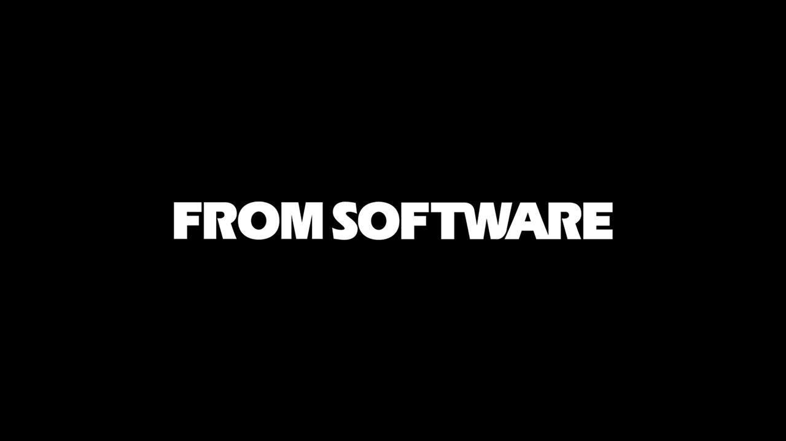
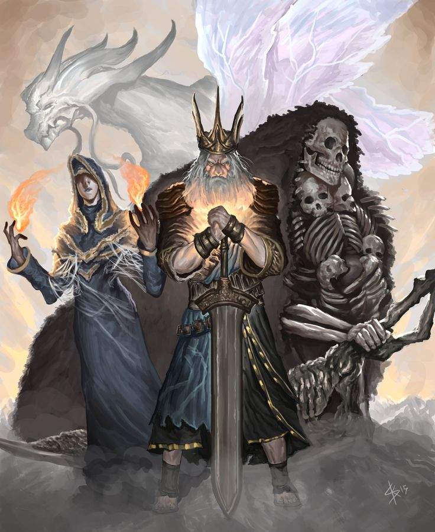

Это Ost из игры для атмосферы
Навигация:
Добро пожаловать в мир
"Dark Souls 1"
Игровой процесс
Так же как и её предшественница — Demon's Souls, игра выполнена в жанре action RPG в сеттинге средневековья и тёмного фэнтези. Мир разбит на несколько десятков тесно связанных подземелий, замков и прочих лабиринтов, наполненных разнообразными опасными монстрами и боссами. Здесь вам предстоит прокачать своего персонажа, найти новое оружие, броню и магию.
 Одной из ключевых механик является смерть персонажа. Поскольку здесь нет опций создания сохранений, при смерти вы будете перемещены к последнему чекпоинту, часть убитых врагов воскреснет и возникнет риск потери неиcпользованного опыта. Эквивалент опыта представлен в игре в виде душ, которые являются и валютой, необходимой для торговли.
Одной из ключевых механик является смерть персонажа. Поскольку здесь нет опций создания сохранений, при смерти вы будете перемещены к последнему чекпоинту, часть убитых врагов воскреснет и возникнет риск потери неиcпользованного опыта. Эквивалент опыта представлен в игре в виде душ, которые являются и валютой, необходимой для торговли.
Другие характерные особенности у игры – это сетевые функции, где игроки могут непосредственно помогать, либо мешать друг другу в прохождении. Также игру отличает от прочих проектов отсутствие в привычном понимании журнала заданий, карты и компаса - игрок должен самостоятельно построить картину мира и понять что от него требуется для продвижения по сюжету, что бывает порой неочевидно; в игре отсутствует и пауза - путешествие проходит безостановочно и спокойно отсидеться получится лишь в некоторых локациях, куда не смогут попасть враги или игроки-вторженцы. Эти особенности сохранятся и в последующих играх серии.
Разработка
 У оригинальной Demon's Souls было непростое начало: было много проблем при разработке, на релизе в Японии получила плохие отзывы критиков и провалилась в продаже; тогда Sony потеряла интерес к этому эксклюзиву и за рубежом его выпускали уже другие компании. Но у западной аудитории игра смогла добиться успеха, и вскоре, в том же 2010 году, Bandai Namco договаривается с Хидэтака Миядзаки и FromSoftware о разработке новой игры.
Первая информация об игре, которая тогда называлась "Project Dark", появилась из утечки с Tokyo Game Show в сентябре 2010г. Официальный анонс уже Dark Souls состоялся в феврале 2011г., а в сентябре того же года игра вышла на PlayStation 3 и Xbox 360.
Тогда игра добилась громкого успеха (в первые месяцы в Америке и Европе было распродано 1,5 миллиона копий) и появилось множество запросов от игроков о релизе на ПК (одна из таких петиций в 2012г. набрала 93 000 подписей). В итоге, в августе 2012, игра добралась и до ПК, где портированием занялась компания n-Space. Игра вышла с заголовком "Dark Souls: Prepare To Die Edition" и включала дополнительный контент. Позже, в октябре 2012, данное DLC вышло и на консолях, где оно получило отдельное название "Artorias of the Abyss".
11 января 2018г. на конференции Nintendo Direct состоялся анонс переиздания игры для актуальных платформ. За версию для PC, PS4, Xbox One отвечала польская компания QLOC, и релиз прошёл 24 мая 2018г. Переиздание для Nintendo Switch подготовила китайская студия Virtuos, игра вышла 19 октября 2018г.
Сюжет
В Эру Древних мир был бесформенным, его окутывал туман. Это была земля серых утёсов, древних деревьев и присносущих драконов. Но затем был Огонь. И с приходом Огня всё распалось на две части. Жар и Холод, Жизнь и Смерть и конечно Свет и Тьма.
 И из Тьмы пришли Они, и Они нашли в пламени Души Повелителей: Нито — первый из мёртвых; Ведьма Изалита и её Дочери Хаоса; Гвин — Повелитель Света и его верные рыцари; и хитрый карлик, которого так легко забыть.
Воспользовавшись Силой Повелителей, они бросили вызов драконам. Молнии Гвина разрывали их каменную чешую. Ведьмы призывали огненные смерчи. Нито насылал смерть и болезни. А Нагой Сит предал свой род и драконы сгинули. Так началась Эра Огня.
Но вскоре пламя погаснет и останется только Тьма. Даже сейчас лишь тлеют угли и человек видит не свет, но бесконечную ночь, а среди живых ходят проклятые носители Знака Тьмы.
Да, воистину, нежить заклеймена Знаком Тьмы. И в этих краях нежить сгоняют и ведут на север, где они будут томиться в заключении до конца дней. Таков твой удел. Но древние легенды гласят, что однажды мертвец будет избран. Он покинет Прибежище Нежити и отправится в страну Древних Повелителей — Лордран.